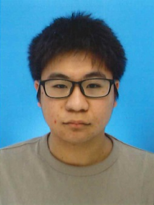

名前 | 河南慈音
生年月日 | 2004年 10月1日
開志専門職大学 2年生
河南慈音と申します。現在、開志専門職大学の情報学部で、ITの分野に特化したスキルを学んでいます。
具体的な就職先のビジョンはまだ決まっていませんが、大学で学んだ知識や技術を活用し、今後のIT産業を担う人材の1人として活躍していきたいと考えています。
履修したプログラミング言語


 C
C++
Python
アイコン by Icons8
C
C++
Python
アイコン by Icons8